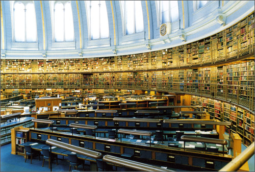

Dr. V.S.Krishna Library.
The Andhra University Library was started in the year 1927, renamed as V.S.Krishna Memorial Library in 1968 as a mark of respect to the former Vice-Chancellor Dr. V.S.Krishna. The Library has two branch Libraries, one in Engineering College and other in Law College. The Library is housed in an imposing structure overlooking the sea. It has three floors and one cellar floor. The ground and first floors have mezzanine floors too. The plan view of the building is in T shape, having East, West and Northern wings. The total plinth area of the building is about 60,000 sqft. The main functionaries of the Library are the Circulation, Periodicals, Reference, Acquisition, Binding and Technical sections apart from the Administrative and Computers sections.
- The Acquisition section deals with the procurement and allots Accession no. The Technical section further processes, like preparation of catalogue cards etc. These two are located in Ground mezzanine Floor. The reprographic facility is provided in the same floor for the convenience of the users.
- The circulation section deals with Text books and Reading room sections and issue/ return of books. This is located in G.F, Ground Mezzanine floor and adjoining Reading room area. Separate Reading room facility is also provided in a spacious two storied building adjacent to the main Library.
- Purpose of the Reference section is mainly to provide facility to users to refer the books in that section. The Science, Engineering and Technology reference books are located in the First Floor and the Arts reference books are located in the second floor. There is also a Thesis section located in the First mezzanine floor. Office of the Librarian, Special reference section and the computer section are located in the First floor.
- The periodicals Section is located in the First mezzanine floor, Where current periodicals are displayed.
- The binding section is in the second floor.
- The Library has huge collection of books apart from important journals , microfilms, paper and palm leaf manuscript. The Library has been serving the academic and research community over years and presently it is serving more than 17,000 users. The Library User community consists of teachers, research scholars, students and non teaching staffs. In addition to this, it also serves a group of deposit borrowers from outside. Most of them are form local industries and organizations and retired teachers of the University. The resources of Dr.V.S.Krishna Library are also frequently referred as the academic and research purposes by faculty and research students of other Universities.
- The Library is also offering a number of information services to its users with professionally qualified staff using the printed and electronic resources and equipment. It is offering 14 hours (8.00 A.M. to 10.00 P.M.) Internet browsing facility for all its users. Access to e-journals is also made available to the campus academic community through UGC infonet programme.